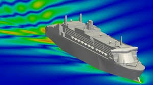

Computational Fluid Dynamics (CFD) has become a fundamental tool in modern ship design, revolutionizing the way naval architects and marine engineers approach the challenges of hydrodynamics. By simulating fluid flow around ship hulls, propellers, and other components, CFD provides valuable insights into the performance and efficiency of vessels. This blog post delves into the applications of CFD in ship design, highlighting its importance in optimizing hull forms, reducing drag, and improving fuel efficiency.
One of the primary applications of CFD in ship design is hull form optimization. By simulating the flow of water around different hull shapes, engineers can identify designs that minimize resistance and maximize efficiency. CFD allows for the exploration of various hull configurations without the need for costly physical prototypes.
Propeller design plays a crucial role in a ship's propulsion system. CFD enables engineers to analyze the performance of different propeller designs, optimizing blade shapes and configurations to achieve maximum thrust and efficiency.
CFD is invaluable in analyzing the seakeeping and maneuvering characteristics of ships. By simulating the interaction between the ship and the waves, engineers can assess the vessel's behavior in different sea conditions, ensuring safety and comfort.
As environmental regulations become stricter, the shipping industry is focusing on reducing emissions and improving energy efficiency. CFD plays a key role in achieving these goals by enabling the design of eco-friendly ships with lower fuel consumption and reduced greenhouse gas emissions.
Computational Fluid Dynamics has transformed the field of ship design, offering powerful tools for optimizing performance, reducing environmental impact, and enhancing safety. As CFD technology continues to advance, its applications in naval architecture will expand, leading to the development of more efficient, sustainable, and innovative ships.